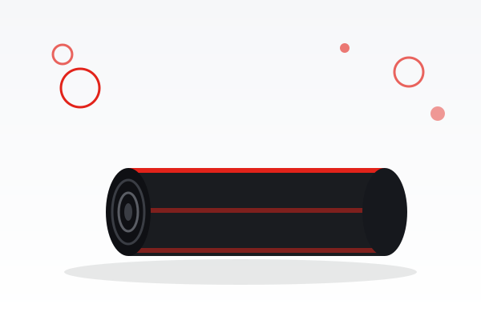

Stacjonarna pralnia dywanów w Krakowie. Pierzemy na wskroś, w głębokiej wodzie, ze wszystkich rodzajów włókien: wełny, bawełny, jedwabiu i materiałów syntetycznych.

Twój dywan codziennie znosi więcej, niż widać. Kurz, sierść, okruchy i alergeny gromadzą się głęboko we włóknach, a zwykłe odkurzanie ich nie usuwa. My pierzemy dywan na wskroś i suszymy w kontrolowanych warunkach.
Metoda prania na wskroś to najwyższa jakość czyszczenia: dywan jest dokładnie zmoczony, wyprany maszynowo, a następnie odwirowany przy 1300 obrotach na minutę, co usuwa do 95% wody i resztek środków.
Każdy dywan suszymy w klimatyzowanej suszarni z komputerową kontrolą temperatury i wilgotności, dzięki czemu wraca świeży, miękki i bez zapachów.
Przywozisz dywan w godzinach lokalu lub przez Dywanomat 24/7, o dowolnej porze.
Pomiar, zdjęcia, indywidualna metka oraz próba materiału i dobór techniki.
Automat trzepiący i odkurzanie usuwają kurz, piasek oraz sierść.
Pranie wstępne i właściwe runa oraz osnowy, preparatami dobranymi do włókna.
Wirówka usuwa 95% wody, suszymy w klimatyzowanej suszarni.
Czysty, suchy dywan foliujemy i wydajemy. Płatność po wykonaniu.
Punkt przyjęć: ul. Marii Jasnorzewskiej 5A, Kraków. Dywanomat 24/7, lokal Pon-Pt 7:00-12:00 i Sob 9:00-12:00. Realizacja 6 do 8 dni, płatność po usłudze. Pralnia: tel. 600 633 443.
| Usługa | Cena |
|---|---|
| Niski włos: sztuczne i wełniane, tkane maszynowo | od 18 zł / m² |
| Wysoki włos (shaggy), akryl, gruba wełna, dwustronne, wiskoza, bawełna | 20 zł / m² |
| Maty wejściowe i wycieraczki z gumowym spodem | 20 zł / m² |
| Jedwab, dywany orientalne, kilimy, gobeliny | 25 zł / m² |
| Koc, narzuta, kapa (również duże rozmiary) | 70–150 zł / szt. |
| Usługa | Cena |
|---|---|
| Usuwanie zapachów (mocz, wymioty, papierosy) | +4 zł / m² |
| Ozonowanie (odkażanie O₃) | +20 zł / szt. |
| Impregnacja | +10 zł / m² |
| Obszywanie, skracanie, obcinanie frędzli (min. 40 zł) | 12 zł / mb |
| Naprawa dywanów | wycena |
| Usługa | Cena |
|---|---|
| Pokrowiec materaca 1-osobowy / 2-osobowy | 140 / 180 zł |
| Fotelik dziecięcy z plastikami / nosidełko | od 90 zł |
| Wózek, spacerówka z plastikami / gondola | od 140 zł |
| Kojec dla psa / domek dla kota | od 30 zł |
| Krzesło, pufa, podnóżek / poduszka | od 15 / 10 zł |
Te elementy prania masz u nas zawsze w cenie.
Ceny mają charakter orientacyjny. Pełną ofertę zobaczysz w cenniku wszystkich usług.
Zwykle 6 do 8 dni roboczych wraz z suszeniem. Termin potwierdzamy przy przyjęciu.
Tak. Do włókien naturalnych dobieramy łagodne preparaty i odpowiednią temperaturę.
To skrytka czynna całą dobę, po prawej od wejścia. Zostawiasz dywan o dowolnej porze, także w święta.
Zamów odbiór lub skorzystaj z Dywanomatu. Wycena jest bezpłatna.